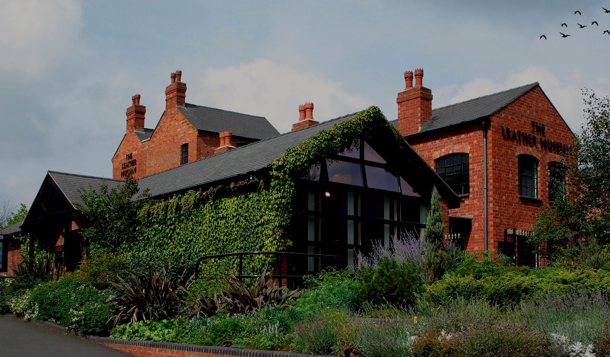
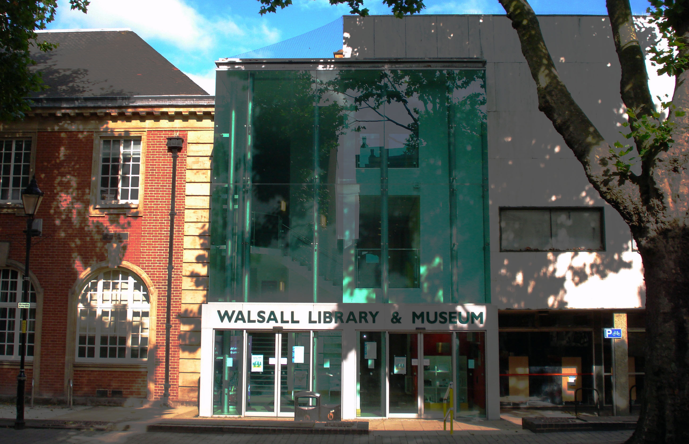
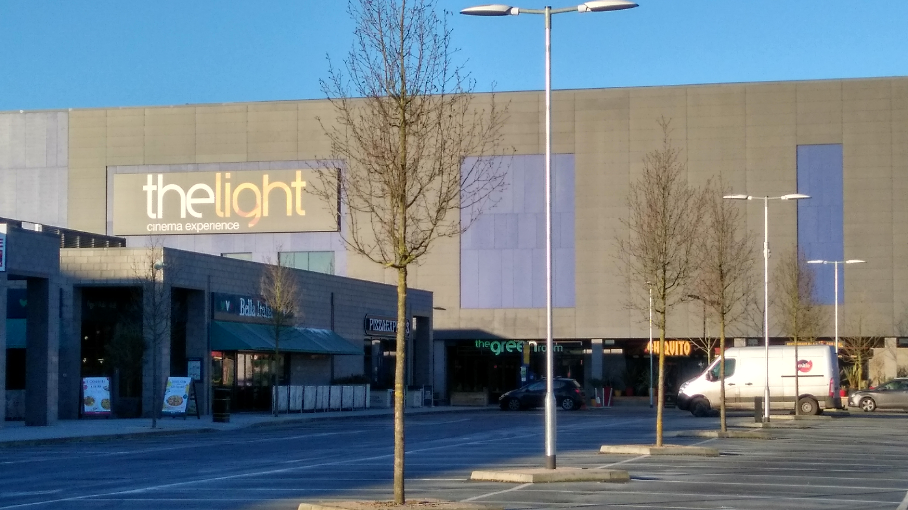

SOME OF THE ATTRACTION IN WALSALL
Leather Museum
Walsall Leather Museum is situated on the edge of Walsall town centre, on the A4148 Littleton Street West ring road. Walsall is within half-an-hour's drive of Birmingham, Lichfield, Dudley and Wolverhampton. It's on of the main attraction in Walsall, ranked n.1 on Tripadvisor. (See more on their website)
The New Art Gallery Walsall
The New Art Gallery Walsall presents, collects and interprets historic, modern and contemporary art in innovative and challenging ways, welcoming visitors from all over the globe as well as our immediate locality. We aim to increase the understanding and enjoyment of arts and culture through our dynamic exhibition, education and events programme. (See more in their website)

Walsall Library
The local libray has a good range of books to chose from; they have books for all ages and tastes. It's located in the town's center, so it is easy to reach. Check their catalogue out, to see if there are any intersenting books for you to read, while staying here. (See catalogue)
The Ligh Cinema Experience
This local cinema is great, it screens all the movies, and it is really affrodable with a good range of offers. The place is clean and the staff is really nice. Check the current movies on their website(Showtimes)
